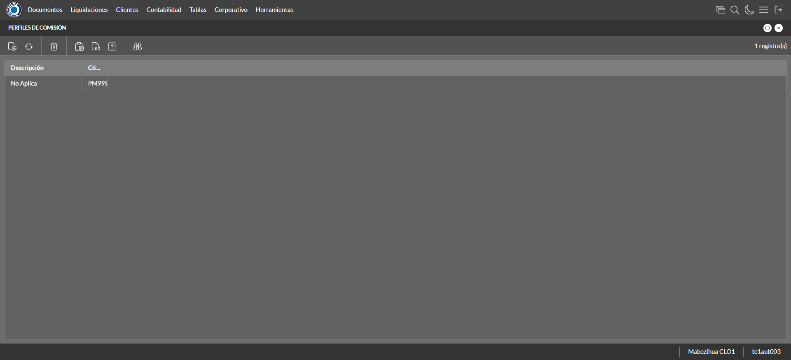

Desarrollado por : Area de Testing PWST
Fecha y hora de inicio : 2022-12-21 09:42:07
Duracion : 0:02:58.710590
Resultado : Total 22，Correctos 21 ，Errores 1 ，Taza de resultado 95.45%
Resumen 95.45% Errores 1 Fallidos 0 Correctos 21 Test realizados 22
| Caso de Prueba | Total | Correctos | Fallido | Error | Detalles | Captura del error |
| ScriptAmarillo.Test: Script Amarillo | 22 | 21 | 0 | 1 | Detalles | |
test |
ft1_1: 2022-12-21 09:42:08,708 - root - INFO - Se abre el chrome
2022-12-21 09:42:09,483 - root - INFO - Entra a la URL
2022-12-21 09:42:09,601 - root - INFO - Maximiza la pantalla
Traceback (most recent call last):
File "C:\Users\jsand\AppData\Local\Programs\Python\Python310\lib\site-packages\selenium-4.4.0-py3.10.egg\selenium\webdriver\remote\switch_to.py", line 87, in frame
frame_reference = self._driver.find_element(By.ID, frame_reference)
File "C:\Users\jsand\AppData\Local\Programs\Python\Python310\lib\site-packages\selenium-4.4.0-py3.10.egg\selenium\webdriver\remote\webdriver.py", line 856, in find_element
return self.execute(Command.FIND_ELEMENT, {
File "C:\Users\jsand\AppData\Local\Programs\Python\Python310\lib\site-packages\selenium-4.4.0-py3.10.egg\selenium\webdriver\remote\webdriver.py", line 434, in execute
self.error_handler.check_response(response)
File "C:\Users\jsand\AppData\Local\Programs\Python\Python310\lib\site-packages\selenium-4.4.0-py3.10.egg\selenium\webdriver\remote\errorhandler.py", line 243, in check_response
raise exception_class(message, screen, stacktrace)
selenium.common.exceptions.NoSuchElementException: Message: no such element: Unable to locate element: {"method":"css selector","selector":"[id="mainFrame"]"}
(Session info: chrome=108.0.5359.125)
Stacktrace:
Backtrace:
(No symbol) [0x00BFF243]
(No symbol) [0x00B87FD1]
(No symbol) [0x00A7D04D]
(No symbol) [0x00AAC0B0]
(No symbol) [0x00AAC22B]
(No symbol) [0x00ADE612]
(No symbol) [0x00AC85D4]
(No symbol) [0x00ADC9EB]
(No symbol) [0x00AC8386]
(No symbol) [0x00AA163C]
(No symbol) [0x00AA269D]
GetHandleVerifier [0x00E99A22+2655074]
GetHandleVerifier [0x00E8CA24+2601828]
GetHandleVerifier [0x00CA8C0A+619850]
GetHandleVerifier [0x00CA7830+614768]
(No symbol) [0x00B905FC]
(No symbol) [0x00B95968]
(No symbol) [0x00B95A55]
(No symbol) [0x00BA051B]
BaseThreadInitThunk [0x76796BD9+25]
RtlGetFullPathName_UEx [0x77B58FD2+1218]
RtlGetFullPathName_UEx [0x77B58F9D+1165]
During handling of the above exception, another exception occurred:
Traceback (most recent call last):
File "C:\Users\jsand\AppData\Local\Programs\Python\Python310\lib\site-packages\selenium-4.4.0-py3.10.egg\selenium\webdriver\remote\switch_to.py", line 90, in frame
frame_reference = self._driver.find_element(By.NAME, frame_reference)
File "C:\Users\jsand\AppData\Local\Programs\Python\Python310\lib\site-packages\selenium-4.4.0-py3.10.egg\selenium\webdriver\remote\webdriver.py", line 856, in find_element
return self.execute(Command.FIND_ELEMENT, {
File "C:\Users\jsand\AppData\Local\Programs\Python\Python310\lib\site-packages\selenium-4.4.0-py3.10.egg\selenium\webdriver\remote\webdriver.py", line 434, in execute
self.error_handler.check_response(response)
File "C:\Users\jsand\AppData\Local\Programs\Python\Python310\lib\site-packages\selenium-4.4.0-py3.10.egg\selenium\webdriver\remote\errorhandler.py", line 243, in check_response
raise exception_class(message, screen, stacktrace)
selenium.common.exceptions.NoSuchElementException: Message: no such element: Unable to locate element: {"method":"css selector","selector":"[name="mainFrame"]"}
(Session info: chrome=108.0.5359.125)
Stacktrace:
Backtrace:
(No symbol) [0x00BFF243]
(No symbol) [0x00B87FD1]
(No symbol) [0x00A7D04D]
(No symbol) [0x00AAC0B0]
(No symbol) [0x00AAC22B]
(No symbol) [0x00ADE612]
(No symbol) [0x00AC85D4]
(No symbol) [0x00ADC9EB]
(No symbol) [0x00AC8386]
(No symbol) [0x00AA163C]
(No symbol) [0x00AA269D]
GetHandleVerifier [0x00E99A22+2655074]
GetHandleVerifier [0x00E8CA24+2601828]
GetHandleVerifier [0x00CA8C0A+619850]
GetHandleVerifier [0x00CA7830+614768]
(No symbol) [0x00B905FC]
(No symbol) [0x00B95968]
(No symbol) [0x00B95A55]
(No symbol) [0x00BA051B]
BaseThreadInitThunk [0x76796BD9+25]
RtlGetFullPathName_UEx [0x77B58FD2+1218]
RtlGetFullPathName_UEx [0x77B58F9D+1165]
During handling of the above exception, another exception occurred:
Traceback (most recent call last):
File "C:\xampp\htdocs\versiones\automatizaciones\AutoPWST\ScriptAmarillo\testCase\ScriptAmarillo.py", line 62, in test
self.driver.switch_to.frame("mainFrame")
File "C:\Users\jsand\AppData\Local\Programs\Python\Python310\lib\site-packages\selenium-4.4.0-py3.10.egg\selenium\webdriver\remote\switch_to.py", line 92, in frame
raise NoSuchFrameException(frame_reference)
selenium.common.exceptions.NoSuchFrameException: Message: mainFrame
|
|
||||
test_000: Ingresa a la base de datos |
pt1_2: 2022-12-21 09:42:12,750 - root - INFO - Escribe el usuario
2022-12-21 09:42:12,863 - root - INFO - Escribe la contraseña
2022-12-21 09:42:12,961 - root - INFO - Se dio clic en el boton ingresar
2022-12-21 09:42:13,661 - root - INFO - Ejecutar Enterprise
2022-12-21 09:42:17,717 - root - INFO - Cambia entre pestañas
|
|
||||
test_001: Ingresa a pantalla Objetivos Diarios |
pt1_3: 2022-12-21 09:42:26,687 - root - INFO - Abre la pantalla de Objetivos Diarios
2022-12-21 09:42:27,273 - root - INFO - La pantalla ejecutada es Lista de precios.
2022-12-21 09:42:27,274 - root - INFO - Captura: C:\xampp\htdocs\versiones\automatizaciones\AutoPWST\ScriptAmarillo\report\img screen：20221221_09_42_27.png
2022-12-21 09:42:27,462 - root - INFO - Se presiona el boton 'Refrescar', para crear un nuevo registro igual al anterior.
2022-12-21 09:42:38,023 - root - INFO - Se presiona el boton 'Nuevo', para crear un nuevo registro.
|

|
||||
test_002: Agregar Objetivos Diarios |
pt1_4: 2022-12-21 09:42:38,605 - root - INFO - Se abrio la pantalla para el ingreso de un registro nuevo.
2022-12-21 09:42:38,635 - root - INFO - El campo 'Vendedor' si se encuentra visible.
2022-12-21 09:42:38,663 - root - INFO - El campo 'Fecha' si se encuentra visible.
2022-12-21 09:42:38,693 - root - INFO - El campo 'Efectividad %' si se encuentra visible.
2022-12-21 09:42:40,145 - root - INFO - Ingresa la efectividad del nuevo registro
2022-12-21 09:42:42,156 - root - INFO - Captura: C:\xampp\htdocs\versiones\automatizaciones\AutoPWST\ScriptAmarillo\report\img screen：20221221_09_42_42.png
2022-12-21 09:42:42,355 - root - INFO - Se hace el cambio de pestaña para continuar con el registro nuevo
2022-12-21 09:42:42,964 - root - INFO - Se presiona el boton 'Nuevo', para crear un nuevo registro.
2022-12-21 09:42:43,549 - root - INFO - El campo 'Grupo Política' si se encuentra visible.
2022-12-21 09:42:43,577 - root - INFO - El campo 'Tipo Objetivo' si se encuentra visible.
2022-12-21 09:42:43,605 - root - INFO - El campo 'Tipo Unidad' si se encuentra visible.
2022-12-21 09:42:43,634 - root - INFO - El campo 'Objetivo Cantidad' si se encuentra visible.
2022-12-21 09:42:43,664 - root - INFO - El campo 'Objetivo Cobertura' si se encuentra visible.
2022-12-21 09:42:45,842 - root - INFO - Ingresa el Objetivo Cantidad del nuevo registro
2022-12-21 09:42:45,904 - root - INFO - Ingresa el Objetivo Cobertura del nuevo registro
2022-12-21 09:42:45,956 - root - INFO - Se da clic en el boton Guardar; se debe crear un nuevo registro.
2022-12-21 09:42:46,159 - root - INFO - Se da clic en el boton Guardar; se debe crear un nuevo registro.
|

|
||||
test_003: Repetir Registro Objetivos Diarios |
pt1_5: 2022-12-21 09:42:46,380 - root - INFO - Se presiona el boton 'Refrescar', para crear un nuevo registro igual al anterior.
2022-12-21 09:42:51,473 - root - INFO - Se presiona el boton 'Nuevo', para crear un nuevo registro igual al anterior.
2022-12-21 09:42:52,013 - root - INFO - Se abrio la pantalla para el ingreso de un registro nuevo.
2022-12-21 09:42:52,039 - root - INFO - El campo 'Vendedor' si se encuentra visible.
2022-12-21 09:42:52,064 - root - INFO - El campo 'Fecha' si se encuentra visible.
2022-12-21 09:42:52,089 - root - INFO - El campo 'Efectividad %' si se encuentra visible.
2022-12-21 09:42:53,537 - root - INFO - Ingresa la efectividad del nuevo registro
2022-12-21 09:42:53,589 - root - INFO - Se da clic en el boton Guardar; se debe crear un nuevo registro.
2022-12-21 09:42:55,598 - root - INFO - Captura: C:\xampp\htdocs\versiones\automatizaciones\AutoPWST\ScriptAmarillo\report\img screen：20221221_09_42_55.png
2022-12-21 09:42:55,846 - root - INFO - Se presiona el boton 'Cerrar', para cerrar el mensaje de duplicidad de llave primaria
2022-12-21 09:42:55,971 - root - INFO - Se presiona el boton 'Cerrar', para cerrar la ventana
|
|||||
test_004: Modifica Objetivos Diarios |
pt1_6: 2022-12-21 09:42:56,087 - root - INFO - Se presiona el boton 'Refrescar', para crear un nuevo registro igual al anterior.
2022-12-21 09:42:57,726 - root - INFO - Se da clic en el registro creado, para proceder a modificarlo.
2022-12-21 09:42:58,338 - root - INFO - Ingresa la efectividad del nuevo registro
2022-12-21 09:43:00,351 - root - INFO - Captura: C:\xampp\htdocs\versiones\automatizaciones\AutoPWST\ScriptAmarillo\report\img screen：20221221_09_43_00.png
2022-12-21 09:43:00,542 - root - INFO - Se hace el cambio de pestaña para continuar con el registro nuevo
2022-12-21 09:43:01,639 - root - INFO - Se da clic en el registro creado, para proceder a modificarlo.
2022-12-21 09:43:03,560 - root - INFO - Ingresa el Objetivo Cantidad del nuevo registro
2022-12-21 09:43:03,653 - root - INFO - Ingresa el Objetivo Cobertura del nuevo registro
2022-12-21 09:43:03,704 - root - INFO - Se da clic en el boton Guardar; se debe crear un nuevo registro.
2022-12-21 09:43:03,894 - root - INFO - Se da clic en el boton Guardar; se debe modificar la informacion del registro.
|

|
||||
test_005: Elimina Objetivos Diarios |
pt1_7: 2022-12-21 09:43:04,150 - root - INFO - Se presiona el boton 'Refrescar', para proceder a eliminar el registro.
2022-12-21 09:43:05,794 - root - INFO - Se da clic en el registro creado, para proceder a eliminarlo.
2022-12-21 09:43:05,878 - root - INFO - Se presiona el boton 'Eliminar', para eliminar el registro.
2022-12-21 09:43:07,893 - root - INFO - Captura: C:\xampp\htdocs\versiones\automatizaciones\AutoPWST\ScriptAmarillo\report\img screen：20221221_09_43_07.png
2022-12-21 09:43:08,095 - root - INFO - Se confirma el eliminado del registro
2022-12-21 09:43:08,270 - root - INFO - Se presiona el boton 'Refrescar', para crear un nuevo registro igual al anterior.
2022-12-21 09:43:08,386 - root - INFO - Se presiona el boton 'Cerrar', para cerrar la pantalla de Categorias Fiscales.
|

|
||||
test_006: Ingresa a pantalla Pop Ups |
pt1_8: 2022-12-21 09:43:09,301 - root - INFO - Abre la pantalla de PopUps
2022-12-21 09:43:09,972 - root - INFO - La pantalla ejecutada es PopUps.
2022-12-21 09:43:10,984 - root - INFO - Captura: C:\xampp\htdocs\versiones\automatizaciones\AutoPWST\ScriptAmarillo\report\img screen：20221221_09_43_10.png
2022-12-21 09:43:12,289 - root - INFO - Se ordenó por codigo.
2022-12-21 09:43:22,859 - root - INFO - Se presiona el boton 'Nuevo', para crear un nuevo registro.
|

|
||||
test_007: Agregar Pop Ups |
pt1_9: 2022-12-21 09:43:23,404 - root - INFO - Se abrio la pantalla para el ingreso de un registro nuevo.
2022-12-21 09:43:23,433 - root - INFO - El campo 'Codigo' si se encuentra visible.
2022-12-21 09:43:23,461 - root - INFO - El campo 'Orden' si se encuentra visible.
2022-12-21 09:43:23,512 - root - INFO - El campo 'Activo' si se encuentra visible.
2022-12-21 09:43:23,541 - root - INFO - El campo 'Descrición' si se encuentra visible.
2022-12-21 09:43:23,570 - root - INFO - El campo 'Modo Visualización' si se encuentra visible.
2022-12-21 09:43:23,597 - root - INFO - El campo 'Tipo Popup' si se encuentra visible.
2022-12-21 09:43:23,625 - root - INFO - El campo 'Fecha Desde' si se encuentra visible.
2022-12-21 09:43:23,653 - root - INFO - El campo 'Fecha Hasta' si se encuentra visible.
2022-12-21 09:43:23,681 - root - INFO - El campo 'Texto' si se encuentra visible.
2022-12-21 09:43:23,709 - root - INFO - El campo 'Seleccione Imagen' si se encuentra visible.
2022-12-21 09:43:23,784 - root - INFO - Ingresa el codigo del nuevo registro
2022-12-21 09:43:23,909 - root - INFO - Ingresa la orden del nuevo registro
2022-12-21 09:43:25,008 - root - INFO - Hizo click en el checkbox Activo
2022-12-21 09:43:25,183 - root - INFO - Ingresa la descripción del nuevo registro
2022-12-21 09:43:25,552 - root - INFO - Se dió click en la opción Pantalla Held.
2022-12-21 09:43:26,478 - root - INFO - Se dió doble click en el registro de Tipo Pop Up.
2022-12-21 09:43:26,663 - root - INFO - Ingresa el texto del nuevo registro
2022-12-21 09:43:27,670 - root - INFO - Captura: C:\xampp\htdocs\versiones\automatizaciones\AutoPWST\ScriptAmarillo\report\img screen：20221221_09_43_27.png
2022-12-21 09:43:27,881 - root - INFO - Se da clic en el boton Guardar; se debe crear un nuevo registro.
|
|||||
test_008: Repetir Registro Pop Ups |
pt1_10: 2022-12-21 09:43:28,271 - root - INFO - Se presiona el boton 'Refrescar', para crear un nuevo registro igual al anterior.
2022-12-21 09:43:29,095 - root - INFO - Se presiona el boton 'Nuevo', para crear un nuevo registro igual al anterior.
2022-12-21 09:43:29,736 - root - INFO - Se abrio la pantalla para el ingreso de un registro nuevo.
2022-12-21 09:43:29,767 - root - INFO - El campo 'Codigo' si se encuentra visible.
2022-12-21 09:43:29,795 - root - INFO - El campo 'Orden' si se encuentra visible.
2022-12-21 09:43:29,820 - root - INFO - El campo 'Activo' si se encuentra visible.
2022-12-21 09:43:29,846 - root - INFO - El campo 'Descrición' si se encuentra visible.
2022-12-21 09:43:29,896 - root - INFO - El campo 'Modo Visualización' si se encuentra visible.
2022-12-21 09:43:29,929 - root - INFO - El campo 'Tipo Popup' si se encuentra visible.
2022-12-21 09:43:29,954 - root - INFO - El campo 'Fecha Desde' si se encuentra visible.
2022-12-21 09:43:29,983 - root - INFO - El campo 'Fecha Hasta' si se encuentra visible.
2022-12-21 09:43:30,009 - root - INFO - El campo 'Texto' si se encuentra visible.
2022-12-21 09:43:30,035 - root - INFO - El campo 'Seleccione Imagen' si se encuentra visible.
2022-12-21 09:43:30,077 - root - INFO - Ingresa el codigo del nuevo registro
2022-12-21 09:43:30,137 - root - INFO - Ingresa la orden del nuevo registro
2022-12-21 09:43:31,255 - root - INFO - Hizo click en el checkbox Activo
2022-12-21 09:43:31,436 - root - INFO - Ingresa la descripción del nuevo registro
2022-12-21 09:43:31,796 - root - INFO - Se dió click en la opción Pantalla Hand Held.
2022-12-21 09:43:32,728 - root - INFO - Se dió doble click en el registro de Tipo PopUp.
2022-12-21 09:43:32,934 - root - INFO - Ingresa el texto del nuevo registro
2022-12-21 09:43:32,996 - root - INFO - Se da clic en el boton Guardar; NO se debe crear un nuevo registro.
2022-12-21 09:43:34,005 - root - INFO - Captura: C:\xampp\htdocs\versiones\automatizaciones\AutoPWST\ScriptAmarillo\report\img screen：20221221_09_43_34.png
2022-12-21 09:43:34,288 - root - INFO - Se presiona el boton 'Cerrar', para cerrar el mensaje de duplicidad de llave primaria
2022-12-21 09:43:34,436 - root - INFO - Se presiona el boton 'Cerrar', para cerrar la ventana
|
|||||
test_009: Modifica Pop Ups |
pt1_11: 2022-12-21 09:43:34,552 - root - INFO - Se presiona el boton 'Refrescar', para proceder a modificar el registro.
2022-12-21 09:43:36,257 - root - INFO - Se dió dos veces click en el encabezado para modificar el orden de los registros.
2022-12-21 09:43:38,452 - root - INFO - Se da clic en el registro creado, para proceder a modificarlo.
2022-12-21 09:43:39,110 - root - INFO - Se modifica el contenido del campo Orden
2022-12-21 09:43:40,215 - root - INFO - Hizo click en el checkbox activo
2022-12-21 09:43:40,490 - root - INFO - Se modifica el contenido del campo Descripción
2022-12-21 09:43:40,834 - root - INFO - Se dió click en la opción Ambos.
2022-12-21 09:43:42,052 - root - INFO - Se dió doble click en el registro de Tipo PopUp.
2022-12-21 09:43:42,297 - root - INFO - Se modifica el contenido del campo Texto
2022-12-21 09:43:43,300 - root - INFO - Captura: C:\xampp\htdocs\versiones\automatizaciones\AutoPWST\ScriptAmarillo\report\img screen：20221221_09_43_43.png
2022-12-21 09:43:43,547 - root - INFO - Se da clic en el boton Guardar; se debe modificar la informacion del registro.
|

|
||||
test_010: Elimina PopUps |
pt1_12: 2022-12-21 09:43:43,780 - root - INFO - Se presiona el boton 'Refrescar', para proceder a eliminar el registro.
2022-12-21 09:43:45,417 - root - INFO - Se da clic en el registro creado, para proceder a eliminarlo.
2022-12-21 09:43:46,517 - root - INFO - Se presiona el boton 'Eliminar', para eliminar el registro.
2022-12-21 09:43:46,521 - root - INFO - Captura: C:\xampp\htdocs\versiones\automatizaciones\AutoPWST\ScriptAmarillo\report\img screen：20221221_09_43_46.png
2022-12-21 09:43:46,767 - root - INFO - Se confirma el eliminado del registro
2022-12-21 09:43:47,347 - root - INFO - Se presiona el boton 'Refrescar', para veriicar si el registro ha sido eliminado.
2022-12-21 09:43:47,990 - root - INFO - Se presiona el boton 'Cerrar', para cerrar la pantalla de Pop Ups.
|

|
||||
test_011: Ingresa a pantalla Paquetes Formulario |
pt1_13: 2022-12-21 09:43:48,924 - root - INFO - Abre la pantalla de Paquetes de Formularios
2022-12-21 09:43:49,506 - root - INFO - Captura: C:\xampp\htdocs\versiones\automatizaciones\AutoPWST\ScriptAmarillo\report\img screen：20221221_09_43_49.png
2022-12-21 09:43:49,624 - root - INFO - La pantalla ejecutada es Zonas de Ventas.
2022-12-21 09:44:00,194 - root - INFO - Se presiona el boton 'Nuevo', para crear un nuevo registro.
|

|
||||
test_012: Agregar Paquetes Formulario |
pt1_14: 2022-12-21 09:44:01,272 - root - INFO - Se abrio la pantalla para el ingreso de un registro nuevo.
2022-12-21 09:44:01,324 - root - INFO - El campo 'Número Paquete' si se encuentra visible.
2022-12-21 09:44:01,356 - root - INFO - El campo 'Formulario Inicial' si se encuentra visible.
2022-12-21 09:44:01,384 - root - INFO - El campo 'Cantidad Formularios' si se encuentra visible.
2022-12-21 09:44:02,442 - root - INFO - Captura: C:\xampp\htdocs\versiones\automatizaciones\AutoPWST\ScriptAmarillo\report\img screen：20221221_09_44_02.png
2022-12-21 09:44:02,594 - root - INFO - Ingresa la cantidad de formularios del nuevo registro
2022-12-21 09:44:02,643 - root - INFO - Se da clic en el boton Guardar; se debe crear un nuevo registro.
|
|||||
test_013: Modifica Paquetes Formulario |
pt1_15: 2022-12-21 09:44:02,840 - root - INFO - Se presiona el boton 'Refrescar', para crear un nuevo registro igual al anterior.
2022-12-21 09:44:05,036 - root - INFO - Se da clic en el registro creado, para proceder a modificarlo.
2022-12-21 09:44:06,037 - root - INFO - Captura: C:\xampp\htdocs\versiones\automatizaciones\AutoPWST\ScriptAmarillo\report\img screen：20221221_09_44_06.png
2022-12-21 09:44:06,220 - root - INFO - Se presiona el boton 'Cerrar', para cerrar la ventana
|

|
||||
test_014: Elimina Paquetes Formulario |
pt1_16: 2022-12-21 09:44:06,324 - root - INFO - Se presiona el boton 'Refrescar', para proceder a eliminar el registro.
2022-12-21 09:44:07,953 - root - INFO - Se da clic en el registro creado, para proceder a eliminarlo.
2022-12-21 09:44:08,022 - root - INFO - Se presiona el boton 'Eliminar', para eliminar el registro.
2022-12-21 09:44:09,038 - root - INFO - Captura: C:\xampp\htdocs\versiones\automatizaciones\AutoPWST\ScriptAmarillo\report\img screen：20221221_09_44_09.png
2022-12-21 09:44:09,222 - root - INFO - Se confirma el eliminado del registro
2022-12-21 09:44:09,345 - root - INFO - Se presiona el boton 'Refrescar', para crear un nuevo registro igual al anterior.
2022-12-21 09:44:09,452 - root - INFO - Se presiona el boton 'Cerrar', para cerrar la pantalla de Categorias Fiscales.
|

|
||||
test_015: Ingresa a pantalla Perfiles Comision |
pt1_17: 2022-12-21 09:44:10,358 - root - INFO - Abre la pantalla de Perfiles de Comisión
2022-12-21 09:44:10,937 - root - INFO - La pantalla ejecutada es Perfiles de Comisión.
2022-12-21 09:44:10,938 - root - INFO - Captura: C:\xampp\htdocs\versiones\automatizaciones\AutoPWST\ScriptAmarillo\report\img screen：20221221_09_44_10.png
2022-12-21 09:44:21,602 - root - INFO - Se presiona el boton 'Nuevo', para crear un nuevo registro.
|
 | ||||
test_016: Agregar Perfiles Comision |
pt1_18: 2022-12-21 09:44:22,140 - root - INFO - Se abrio la pantalla para el ingreso de un registro nuevo.
2022-12-21 09:44:22,169 - root - INFO - El campo 'Codigo' si se encuentra visible.
2022-12-21 09:44:22,198 - root - INFO - El campo 'Descrición' si se encuentra visible.
2022-12-21 09:44:22,232 - root - INFO - El campo 'Porcentaje Global' si se encuentra visible.
2022-12-21 09:44:22,265 - root - INFO - El campo 'Con impuesto' si se encuentra visible.
2022-12-21 09:44:22,294 - root - INFO - El campo 'Comisión Repartidor' si se encuentra visible.
2022-12-21 09:44:22,354 - root - INFO - Ingresa el codigo del nuevo registro
2022-12-21 09:44:22,439 - root - INFO - Ingresa la descripción del nuevo registro
2022-12-21 09:44:22,500 - root - INFO - Ingresa el Porcentaje Global del nuevo registro
2022-12-21 09:44:22,572 - root - INFO - Se hizó click en el Checkbox Con impuesto
2022-12-21 09:44:22,637 - root - INFO - Se hizó click en el checkbox Comisión Repartidor
2022-12-21 09:44:23,644 - root - INFO - Captura: C:\xampp\htdocs\versiones\automatizaciones\AutoPWST\ScriptAmarillo\report\img screen：20221221_09_44_23.png
2022-12-21 09:44:23,833 - root - INFO - Se hace el cambio a la pestaña Topes para continuar con el registro nuevo
2022-12-21 09:44:24,409 - root - INFO - Se presiona el boton 'Nuevo', para crear un nuevo registro de Topes.
2022-12-21 09:44:24,963 - root - INFO - El campo 'Moneda' si se encuentra visible.
2022-12-21 09:44:24,992 - root - INFO - El campo 'Tope' si se encuentra visible.
2022-12-21 09:44:25,026 - root - INFO - El campo 'Porcentaje' si se encuentra visible.
2022-12-21 09:44:25,947 - root - INFO - Se dió doble click en el registro de Moneda.
2022-12-21 09:44:26,047 - root - INFO - Ingresa el tope del nuevo registro
2022-12-21 09:44:26,133 - root - INFO - Ingresa el Porcentaje del nuevo registro
2022-12-21 09:44:26,207 - root - INFO - Se da clic en el boton Guardar; se debe crear un nuevo registro de Topes.
2022-12-21 09:44:26,395 - root - INFO - Se hace el cambio a la pestaña Cuenta Articulo para continuar con el registro nuevo
2022-12-21 09:44:26,971 - root - INFO - Se presiona el boton 'Nuevo', para crear un nuevo registro de Cuenta Articulo.
2022-12-21 09:44:27,524 - root - INFO - El campo 'Cuenta' si se encuentra visible.
2022-12-21 09:44:27,553 - root - INFO - El campo 'Artículo' si se encuentra visible.
2022-12-21 09:44:27,580 - root - INFO - El campo 'Porcentaje' si se encuentra visible.
2022-12-21 09:44:29,017 - root - INFO - Se dió doble click en el registro de Cuenta.
2022-12-21 09:44:30,524 - root - INFO - Se dió doble click en el registro de Articulo.
2022-12-21 09:44:30,616 - root - INFO - Ingresa el Porcentaje del nuevo registro
2022-12-21 09:44:30,699 - root - INFO - Se da clic en el boton Guardar; se debe crear un nuevo registro de Cuenta Articulo.
2022-12-21 09:44:30,928 - root - INFO - Se hace el cambio a la pestaña Cuentas para continuar con el registro nuevo
2022-12-21 09:44:31,490 - root - INFO - Se presiona el boton 'Nuevo', para crear un nuevo registro de Cuentas.
2022-12-21 09:44:32,028 - root - INFO - El campo 'Cuenta' si se encuentra visible.
2022-12-21 09:44:32,071 - root - INFO - El campo 'Porcentaje' si se encuentra visible.
2022-12-21 09:44:33,482 - root - INFO - Se dió doble click en el registro de Cuenta.
2022-12-21 09:44:33,603 - root - INFO - Ingresa el Porcentaje del nuevo registro
2022-12-21 09:44:33,678 - root - INFO - Se da clic en el boton Guardar; se debe crear un nuevo registro de Cuentas.
2022-12-21 09:44:33,893 - root - INFO - Se hace el cambio a la pestaña Articulos para continuar con el registro nuevo
2022-12-21 09:44:34,484 - root - INFO - Se presiona el boton 'Nuevo', para crear un nuevo registro de Articulos.
2022-12-21 09:44:35,037 - root - INFO - El campo 'Artículo' si se encuentra visible.
2022-12-21 09:44:35,080 - root - INFO - El campo 'Porcentaje' si se encuentra visible.
2022-12-21 09:44:36,513 - root - INFO - Se dió doble click en el registro de Articulo.
2022-12-21 09:44:36,633 - root - INFO - Ingresa el Porcentaje del nuevo registro
2022-12-21 09:44:36,725 - root - INFO - Se da clic en el boton Guardar; se debe crear un nuevo registro de Articulos.
2022-12-21 09:44:36,891 - root - INFO - Se hace el cambio a la pestaña Tipos de Documento para continuar con el registro nuevo
2022-12-21 09:44:37,480 - root - INFO - Se presiona el boton 'Nuevo', para crear un nuevo registro de Tipo Documento.
2022-12-21 09:44:38,024 - root - INFO - El campo 'Tipo Documento' si se encuentra visible.
2022-12-21 09:44:38,059 - root - INFO - El campo 'Origen' si se encuentra visible.
2022-12-21 09:44:38,093 - root - INFO - El campo 'Signo' si se encuentra visible.
2022-12-21 09:44:38,129 - root - INFO - El campo 'Cancelado' si se encuentra visible.
2022-12-21 09:44:39,025 - root - INFO - Se dió doble click en el registro de Tipo Documento.
2022-12-21 09:44:41,391 - root - INFO - Se dió click en la opción Backoffice.
2022-12-21 09:44:41,732 - root - INFO - Se dió click en la opción Suma.
2022-12-21 09:44:41,799 - root - INFO - Se dió click en el checkbox Cancelado.
2022-12-21 09:44:41,856 - root - INFO - Se da clic en el boton Guardar; se debe crear un nuevo registro de Tipos Documento.
2022-12-21 09:44:42,069 - root - INFO - Se da clic en el boton Guardar; se debe crear un nuevo registro.
|

|
||||
test_017: Repetir Registro Perfiles Comision |
pt1_19: 2022-12-21 09:44:42,329 - root - INFO - Se presiona el boton 'Refrescar', para crear un nuevo registro igual al anterior.
2022-12-21 09:44:42,454 - root - INFO - Se presiona el boton 'Nuevo', para crear un nuevo registro igual al anterior.
2022-12-21 09:44:43,001 - root - INFO - Se abrio la pantalla para el ingreso de un registro nuevo.
2022-12-21 09:44:43,034 - root - INFO - El campo 'Codigo' si se encuentra visible.
2022-12-21 09:44:43,086 - root - INFO - El campo 'Descrición' si se encuentra visible.
2022-12-21 09:44:43,123 - root - INFO - El campo 'Porcentaje Global' si se encuentra visible.
2022-12-21 09:44:43,159 - root - INFO - El campo 'Con impuesto' si se encuentra visible.
2022-12-21 09:44:43,193 - root - INFO - El campo 'Comisión Repartidor' si se encuentra visible.
2022-12-21 09:44:43,263 - root - INFO - Ingresa el codigo del nuevo registro
2022-12-21 09:44:43,369 - root - INFO - Ingresa la descripción del nuevo registro
2022-12-21 09:44:43,443 - root - INFO - Ingresa el Porcentaje Global del nuevo registro
2022-12-21 09:44:43,512 - root - INFO - Se hizó click en el Checkbox Con impuesto
2022-12-21 09:44:43,577 - root - INFO - Se hizó click en el checkbox Comisión Repartidor
2022-12-21 09:44:43,641 - root - INFO - Se da clic en el boton Guardar; No se debe crear un nuevo registro.
2022-12-21 09:44:44,644 - root - INFO - Captura: C:\xampp\htdocs\versiones\automatizaciones\AutoPWST\ScriptAmarillo\report\img screen：20221221_09_44_44.png
2022-12-21 09:44:44,858 - root - INFO - Se presiona el boton 'Cerrar', para cerrar el mensaje de duplicidad de llave primaria
2022-12-21 09:44:44,978 - root - INFO - Se presiona el boton 'Cerrar', para cerrar la ventana
|
|||||
test_018: Modifica Perfiles Comision |
pt1_20: 2022-12-21 09:44:45,088 - root - INFO - Se presiona el boton 'Refrescar', para proceder a modificar el registro.
2022-12-21 09:44:46,701 - root - INFO - Se da doble click en el registro creado, para proceder a modificarlo.
2022-12-21 09:44:47,350 - root - INFO - Se modifica el contenido del campo Descripción
2022-12-21 09:44:47,442 - root - INFO - Se modifica el contenido del campo Porcentaje Global
2022-12-21 09:44:47,504 - root - INFO - Se hizó click en el checkbox Con impuesto
2022-12-21 09:44:47,563 - root - INFO - Se hizó click en el checkbox Comisión Repartidor
2022-12-21 09:44:49,566 - root - INFO - Captura: C:\xampp\htdocs\versiones\automatizaciones\AutoPWST\ScriptAmarillo\report\img screen：20221221_09_44_49.png
2022-12-21 09:44:49,742 - root - INFO - Se da clic en el boton Guardar; se debe modificar la informacion del registro.
|

|
||||
test_019: Elimina Perfiles Comision |
pt1_21: 2022-12-21 09:44:50,052 - root - INFO - Se presiona el boton 'Refrescar', para proceder a eliminar el registro.
2022-12-21 09:44:51,677 - root - INFO - Se da clic en el registro creado, para proceder a eliminarlo.
2022-12-21 09:44:52,748 - root - INFO - Se da clic en la ventana de tope, para proceder a eliminarlo.
2022-12-21 09:44:53,839 - root - INFO - Se da clic en el tope creado, para proceder a eliminarlo.
2022-12-21 09:44:54,473 - root - INFO - Se da clic en la ventana cuenta/articulo, para proceder a eliminarlo.
2022-12-21 09:44:55,555 - root - INFO - Se da clic en la cuenta/articulo creado, para proceder a eliminarlo.
2022-12-21 09:44:56,186 - root - INFO - Se da clic en la ventana cuentas, para proceder a eliminarlo.
2022-12-21 09:44:57,252 - root - INFO - Se da clic en la cuenta creado, para proceder a eliminarlo.
2022-12-21 09:44:57,861 - root - INFO - Se da clic en la cuenta/articulo creado, para proceder a eliminarlo.
2022-12-21 09:44:58,943 - root - INFO - Se da clic en el articulo creado, para proceder a eliminarlo.
2022-12-21 09:44:59,594 - root - INFO - Se da clic en la ventana tipo documento, para proceder a eliminarlo.
2022-12-21 09:45:00,670 - root - INFO - Se da clic en el tipo de documento creado, para proceder a eliminarlo.
2022-12-21 09:45:00,893 - root - INFO - Se da clic en el boton Guardar; se debe crear un nuevo registro.
2022-12-21 09:45:01,442 - root - INFO - Se da clic en el registro creado, para proceder a eliminarlo.
2022-12-21 09:45:01,492 - root - INFO - Se presiona el boton 'Eliminar', para eliminar el registro.
2022-12-21 09:45:01,493 - root - INFO - Captura: C:\xampp\htdocs\versiones\automatizaciones\AutoPWST\ScriptAmarillo\report\img screen：20221221_09_45_01.png
2022-12-21 09:45:01,671 - root - INFO - Se confirma el eliminado del registro
2022-12-21 09:45:01,835 - root - INFO - Se presiona el boton 'Refrescar', para verificar que el registro se ha eliminado.
2022-12-21 09:45:01,989 - root - INFO - Se presiona el boton 'Cerrar', para cerrar la pantalla de Perfiles de Comisión.
|
|||||
test_020: Cerrar_Navegador |
pt1_22: 2022-12-21 09:45:06,311 - root - INFO - Se cierra chrome
|
|
||||
| Caso de prueba | 22 | 21 | 0 | 1 | Taza de resultado：95.45% | |